Sabertooth
Hổ Răng Kiếm thế Pleistocene
Tổng quan
Thế
Pleistocene
Họ
Felidae
Chi
Smilodon
Dài
2 m
Cao
1.2 m
Nặng
400 kg
Thức ăn

Sabertooth là một chi của phân họ Machairodont đã tuyệt chủng thuộc Họ Mèo. Chúng là một trong những động vật có vú thời tiền sử nổi tiếng nhất và loài mèo răng kiếm được biết đến rộng rãi nhất. Mặc dù thường được gọi là hổ răng kiếm, chi này không liên quan chặt chẽ đến các loài hổ hay mèo hiện đại.
Nguồn: wikipedia.org
Phân bố
Khu vực châu Mỹ
Thông tin thêm về Sabertooth
Kỷ nguyên và phân bố
Hổ răng kiếm đã đi lang thang tự do ở châu Mỹ trong thế Canh Tân 2,5 triệu năm đến 10,000 năm trước. Phạm vi môi trường sống rất rộng, bao gồm tất cả các vùng tại châu Mỹ từ Đông sang Tây và Bắc xuống Nam. Sinh vật này sống ở những khu vực mà con mồi của nó sinh sống. Điều này bao gồm tất cả các khu vực mà động vật ăn thực vật yêu thích như rừng, khu vực cây bụi và đồng cỏ.
Tên khoa học
Tên khoa học của Sabertooth là Smilodon. Chi này được đặt tên bởi nhà tự nhiên học người Đan Mạch Peter Wilhelm Lund vào năm 1842, ý nghĩa gốc của tên Smilodon bắt nguồn từ tiếng Hy Lạp cổ đại, trong đó σμίλη (smilē) là một con dao mổ hoặc dao hai lưỡi, và οδόντος (odontús) là răng. Dịch ra là "răng có hình dạng như con dao hai lưỡi", dựa vào đặc điểm những chiếc răng nanh nổi bật của chúng.
Có ba loài trong chi Smilodon là S. Gracalis được cho là đã tiến hóa từ Meganterreon (một con mèo răng kiếm sống ở Châu Phi, Âu Á và Bắc Mỹ). Smilodon Populator và Smilodon Fatalis có khả năng là hậu duệ nhỏ hơn của Smilodon Gracilis.
Kích thước
Sabertooth có kích cỡ tương đương với những loài đại miêu hiện đại, nhưng săn chắc hơn. Loài nhỏ nhất S. Gracilis được ước tính có trọng lượng từ 55 đến 100 kg, bằng kích thước của một con báo đốm. Loài S. Fatalis có kích thước trung bình nằm giữa S. Gracilis và S. Populator, dao động từ 160 đến 280 kg và đạt đến chiều cao vai 100 cm và chiều dài cơ thể 175 cm, tương tự như một con sư tử. Cuối cùng là S. Populator là một trong những loài mèo lớn nhất được biết đến, với khối lượng cơ thể từ 220 đến 470 kg, chiều dài 200 cm và chiều cao có thể lên tới 120 cm.
Ngoại hình
Sabertooth có cơ thể mạnh mẽ hơn bất kỳ loài săn mồi họ mèo nào khác, với các chi trước vô cùng phát triển cùng các cơ bắp. Đặc điểm nổi bật, dễ nhận thấy nhất của hổ răng kiếm là hai chiếc răng nanh có răng cưa dài từ 14 đến 28 cm (răng nanh của những loài mèo lớn hiện đại chỉ dài khoảng 5 đến 7 cm).
Để tồn tại trong khí hậu băng giá của Thế Pleistocen, loài smilodon có lớp lông dày như gấu, với tông màu be hơi vàng tương tự như sư tử. Bộ lông này phù hợp với cơ thể vạm vỡ, ngực rộng, và đuôi ngắn của hổ răng kiếm, nhưng càng thêm phần làm chúng trông khác biệt với loài hổ hiện đại.
Chế độ ăn và săn mồi
Các nghiên cứu về hồ sơ hóa thạch răng của Sabertooth chỉ ra rằng chúng là một động vật ăn thịt đầu bảng, chủ yếu ăn thịt những động vật lớn có da và cơ dày, sau đó để lại xương cho một số loài ăn xác thối khác. Nếu chúng ăn nhiều xương, điều này sẽ gây ra vết mòn có thể nhận dạng được trên răng, điều mà hóa thạch của hổ răng kiếm không có.
Chiến lược săn mồi của loài động vật này có lẽ giống như những con sư tử hiện đại. Có giả thuyết cho rằng chúng đi săn theo đàn. Chúng có khả năng đi lang thang xung quanh để tìm một khu vực có triển vọng tốt cho một bữa ăn và sau đó cúi xuống để giữ yên hoàn toàn và đợi con mồi đến đủ gần để vồ lấy. Đây là kiểu săn mồi theo kiểu phục kích.
Khám phá
Trong những năm 1830, nhà tự nhiên học người Đan Mạch Peter Wilhelm Lund và các trợ lý của ông đã thu thập hóa thạch trong các hang động đá vôi gần thị trấn nhỏ Lagoa Santa, Minas Gerais, Brazil. Trong số hàng ngàn hóa thạch được tìm thấy, ông nhận ra một vài chiếc răng má bị cô lập là của một con linh cẩu, Lund ban đầu muốn đặt tên cho chi là Hyaenodon, nhưng sau khi tìm thấy nhiều vật liệu hơn, Lund kết luận rằng hóa thạch này thực chất thuộc về một chi riêng biệt của họ Mèo, ông đặt tên cho nó là Smilodon Populator vào năm 1842.
Kẻ thù tự nhiên
Người ta không biết chính xác có bao nhiêu con hổ răng kiếm tồn tại. Chắc chắn trong số hàng nghìn chiếc được tìm thấy tại La Brea Tar Pits, phải có hàng nghìn, có thể là hàng triệu. Hóa thạch của chúng đã được tìm thấy trên khắp Bắc Mỹ và Nam Mỹ. Điều này cho thấy một quần thể động vật rộng lớn trải rộng trên một lãnh thổ rộng lớn trong hàng nghìn năm.
Những kẻ săn mồi duy nhất săn hổ răng kiếm là con người. Nhiều nhà khoa học tin rằng con người đã săn hổ răng kiếm đến tuyệt chủng. Sự mở rộng đáng kể của con người sang châu Mỹ xảy ra vào thời điểm hổ răng kiếm chết. Thật đáng buồn khi nghĩ rằng con người phải chịu trách nhiệm một phần hoặc chính trong việc tiêu diệt loài sinh vật này. Tuy nhiên, nó đã là thiên địch của con người thì phải tự vệ, nếu không sẽ trở thành bữa ăn tiếp theo của hổ răng kiếm. Nhiệt độ tăng lên do biến đổi khí hậu vào cuối Kỷ băng hà cũng có thể góp phần khiến loài hổ răng kiếm bị tuyệt chủng.
Gương mặt nổi tiếng
Hình ảnh của sinh vật này không chỉ đẹp thôi đâu mà còn rất nổi tiếng nữa đấy. Sabertooth đúng là siêu sao điện ảnh khi xuất hiện trong loạt phim "Ice age - Kỷ băng hà", "10000 BC" và gần như là tuyệt đại đa số các bộ phim về thời cổ đại chưa kể chúng còn là hình mẫu thiết kế logo của nhiều tổ chức nữa.